Set up sending: live email, test address, texts, links
In the office app, press Help and type set up sending
: the tour plays on your own screen, with your own data.
-
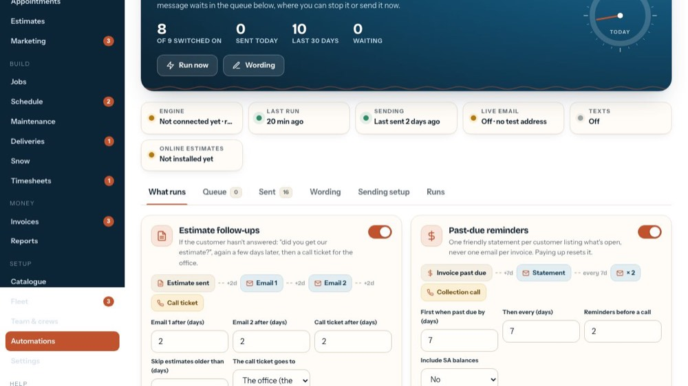
1Sending setup
The Sending setup tab: how messages are sent.
-
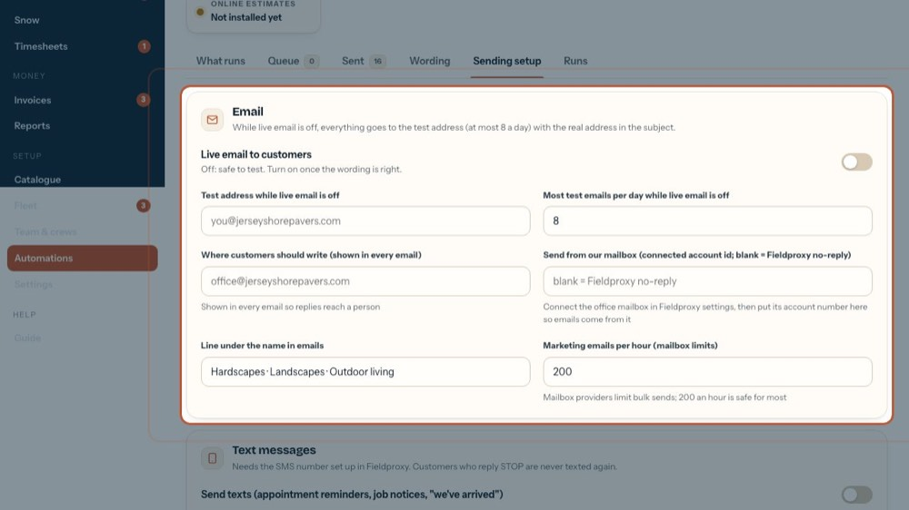
2Email
While live email is off, everything goes to the test address (a few a day at most) with the real address in the subject.
-
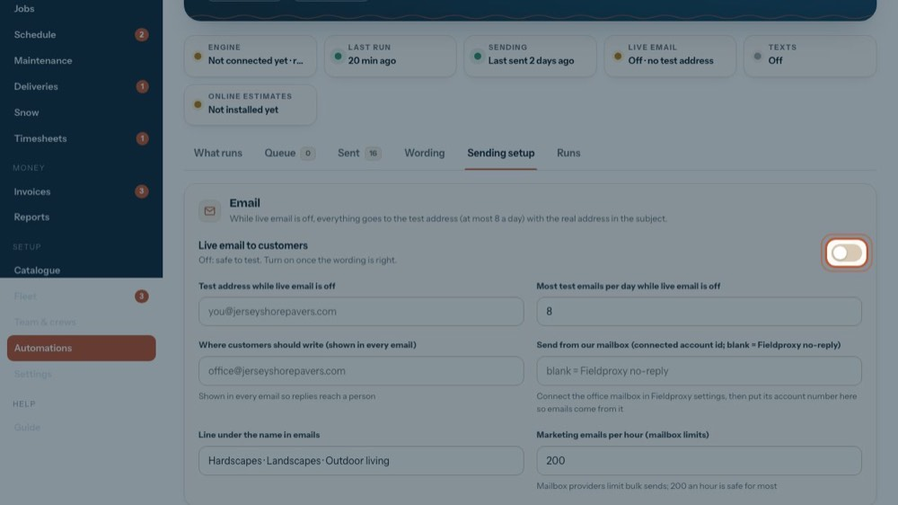
3Live email to customers
Switch it on once the wording is right: then automations write to real customers. It needs the office email first.
-
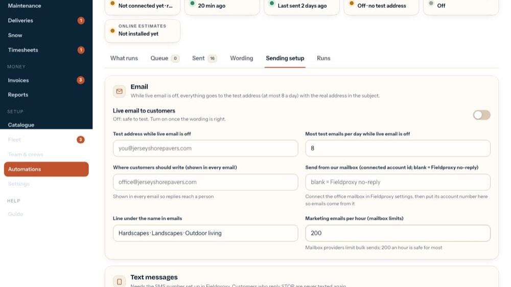
4Test address
Where emails go while live email is off.
-
5
Test emails a day
The most test emails a day while live email is off.
-
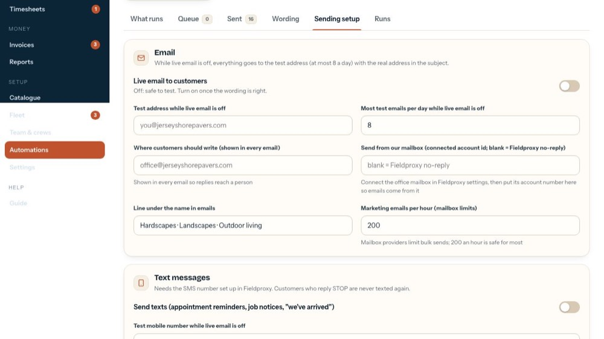
6Where customers write
Shown in every email so replies reach a person.
-
 7
7Send from our mailbox
Blank: emails come from the Fieldproxy no-reply. Connect the office mailbox in Fieldproxy, then put its account number here.
-
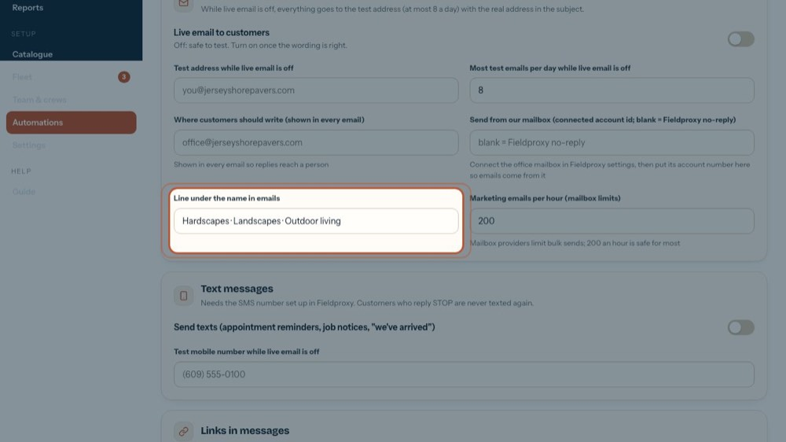
8Line under the name
The line under the company name in emails.
-
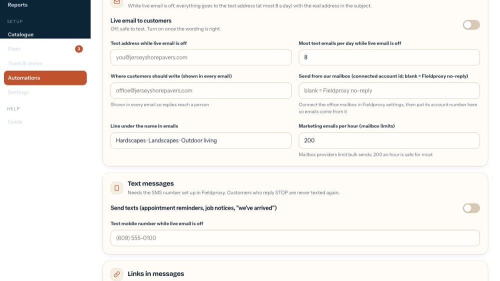
9Marketing emails per hour
Mailbox providers limit bulk sends; 200 an hour is safe for most.
-
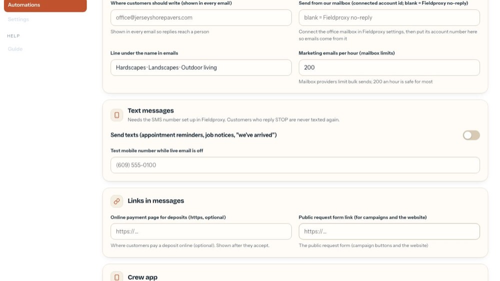
10Text messages
Switch texts on for appointment reminders, job notices and "we've arrived". Needs the SMS number set up. Customers who reply STOP are never texted again.
-
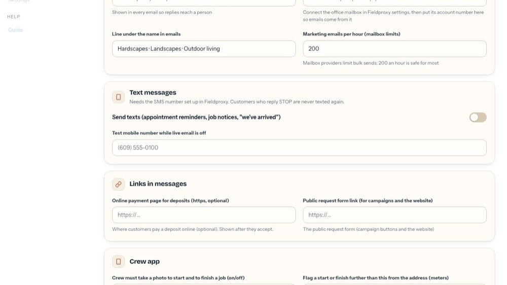
11Test mobile number
Where texts go while live email is off.
-
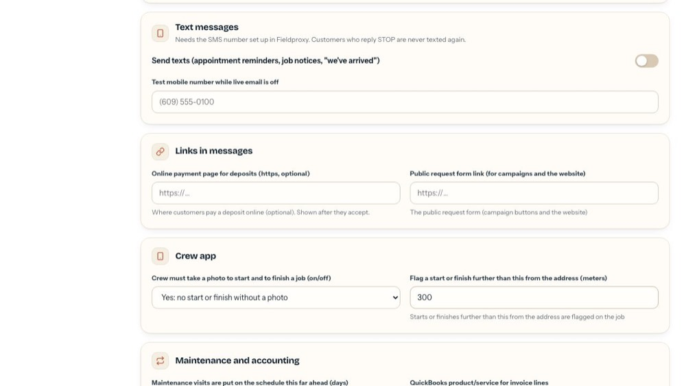
12Online payment page
Optional: where customers pay a deposit online. Shown after they accept.
-
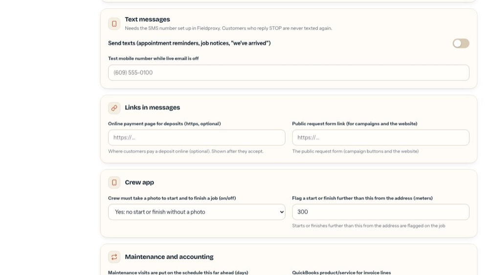
13Request form link
The public request form, used by campaign buttons and the website.
-
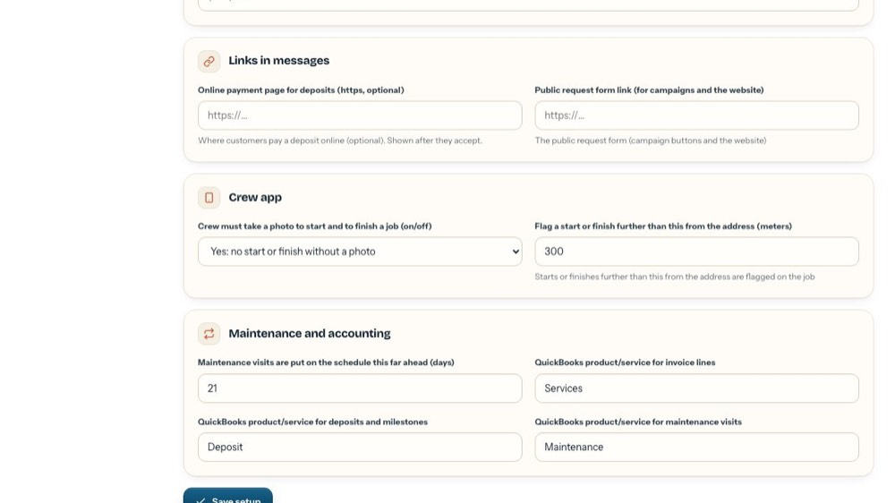
14Crew photos
Yes: crews can't start or finish a job without a photo.
-
 15
15Too far from the job
Starts or finishes further than this from the address (in meters) are flagged on the job.
-
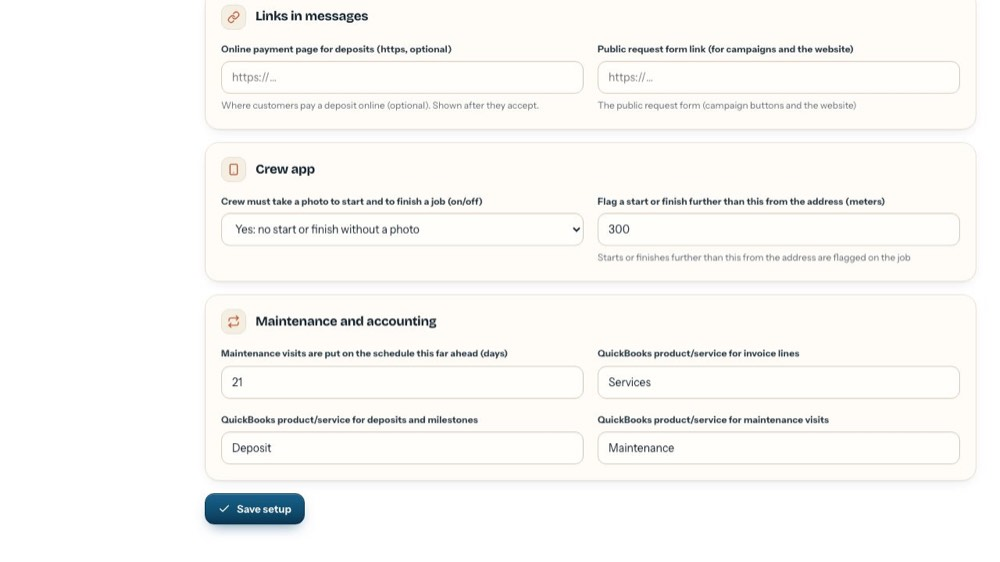
16Maintenance ahead
How many days ahead maintenance visits are put on the schedule.
-
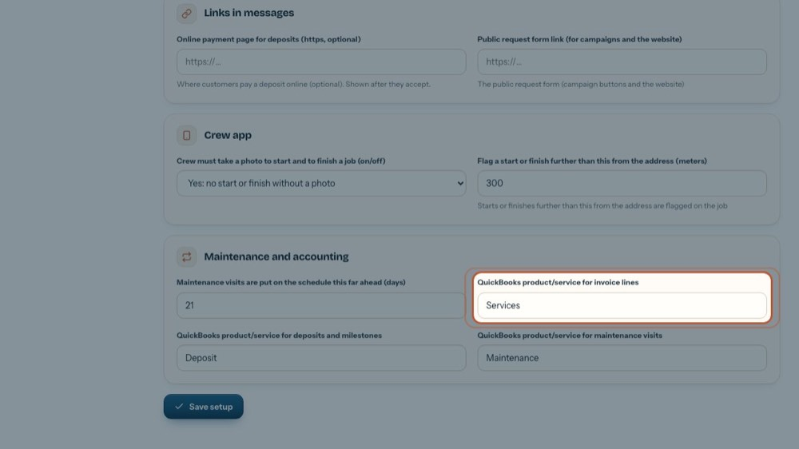
17QuickBooks items
The QuickBooks product/service names for invoice lines, deposits and milestones, and maintenance visits, used in the QuickBooks file.
-
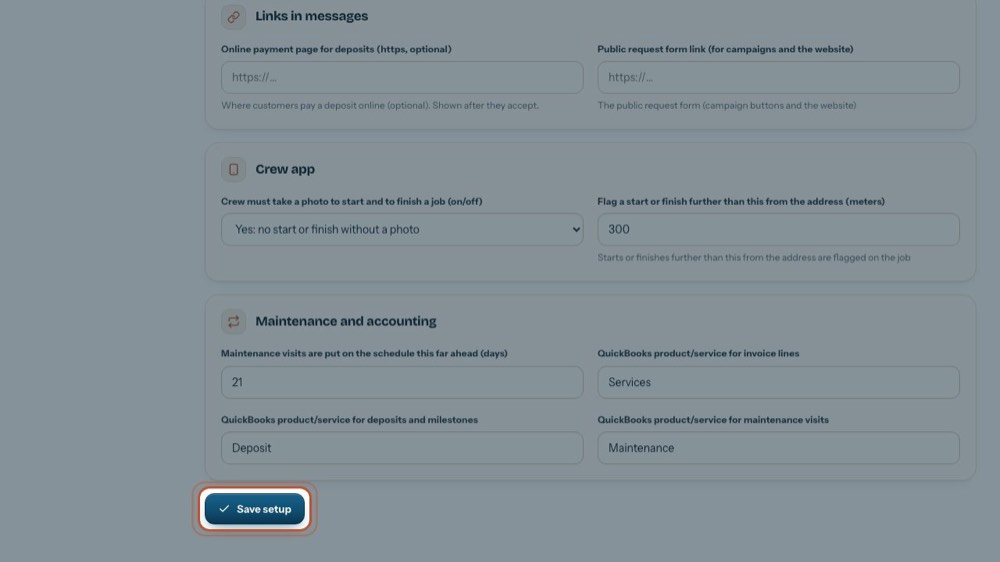
18Save setup
Keeps everything on this tab. It checks the addresses and links first.